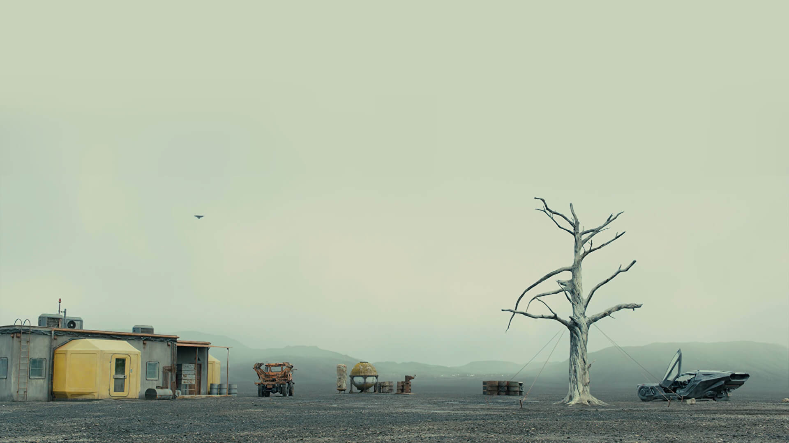
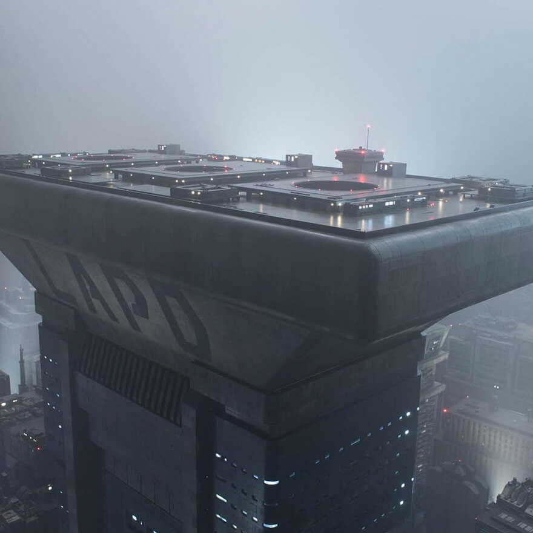

Blade Runner 2049
In the year 2049, bio-engineered humans called replicants have been integrated into society, though still face discrimination from humans. Officer K, a Nexus-9 replicant model, works as a "Blade Runner" for the LAPD, hunting down and "retiring" (killing) outdated Nexus-8 model replicants with open-ended lifespans rushed into production by the Tyrell Corporation in 2020 following the death of its founder, Dr. Eldon Tyrell, in November 2019. K lives with his Wallace designed and produced "Joi", who keeps him company in his apartment as a holographic projection.
June 30, 2049
K's investigation into an elusive replicant freedom movement leads him to a protein farm in rural California, where he finds rogue Nexus-8 replicant Sapper Morton. Following a brief questioning, the two engage in vicious hand to hand combat inside the farmhouse. Ultimately, K is able to fend off Sapper and, returning to the kitchen area, get a hold of his gun. At gunpoint, Sapper reveals that K is, in fact, a replicant (a Nexus-9, though not explicitly mentioned) and that he "has never seen a miracle" moments before K fires twice, killing him. Prior to leaving the farm, K notices a flower lying in at the base of Sapper's tree and, upon conducting a scan of the ground below it, finds a buried crate.
Back in Los Angeles, K enters the LAPD headquarters where he is given an immediate baseline test. Unlike older V-K testing, the new system is rather crude and impersonal. Excerpts from Vladimir Nabokov's Pale Fire are heavily utilized; the quotes from the novel were selected by K himself for use in the examination.
Later that night, K returns to his apartment in Los Angeles where he is accompanied by his girlfriend, Joi. K gives Joi an "emanator" (also of Wallace design) as an "anniversary present". The emanator allows Joi to be portable or, in K's words, to "go anywhere in the world" unrestrained by the need of a home projector. During an intimate moment with Joi, K is interrupted by a call from his superior at the LAPD, Lieutenant Joshi, who recalls K to the police headquarters.
Back at the LAPD headquarters, a forensic analysis initially reveals that the contents inside the box, a complete skeleton and a lock of hair, belong to a female who died as a result of complications from an emergency caesarian section. Upon closer inspection, K discovers a serial number inscribed on the bone. The discovery is alarming to both K and Joshi, for it was previously inconceivable that a replicant could procreate. K is ordered by Joshi to destroy all evidence related to the case and to eliminate "the child". The knowledge that replicants are capable of procreation, Joshi fears, will lead to a bloody war between humans and replicants on Earth and in the Off-world colonies.
K begins his investigation at the Wallace Corporation Earth Headquarters. Utilizing the lock of hair extracted from the ossuary below Sapper's tree, K, with the assistance of a Wallace employee, is able to identify the female replicant as a "standard issue", "pre-Blackout" and "unremarkable" Tyrell produced replicant. Moments later, Luv introduces herself to Officer K before leading him to a memory storage center. An audio-based memory pertaining to the female replicant under investigation is played. The audio file reveals a Blade Runner "Deckard" conducting a Voight-Kampff test on the female replicant.

July 1, 2049
K continues his investigation with a visit to Officer Deckard's old colleague and former Blade Runner, Gaff. Following a brief questioning by K, Gaff fails to provide any leads to Deckard's current whereabouts. Gaff mentions that Deckard is "nyugdijas" (retired).
That night, while having dinner in Los Angeles, K is approached by a prostitute, Mariette, tasked by an unknown woman, with knowledge of Sapper Morton, to extract information from him. Despite Mariette's best efforts, she is unable to gain any information related to the case from K, who also rejects all her sexual advances towards him.
July 2, 2049
Returning to Sapper Morton's farm, K finds an old photograph of a woman holding a baby (the presumed child) as well as a baby's sock stored inside a cigarette tin and hidden within a piano. Sapper's tree is also visible in the photograph. Before leaving the farm, K gives the tree one last close inspection. At the base of the tree, K discovers the date "6.10.21" inscribed. This finding is visibly disturbing to K, who then sets the farmhouse afire and leaves.
Believing that reproduction in replicants can bolster his production, and subsequently expand his operations in the Off-world colonies, Niander Wallace sends his replicant enforcer Luv to retrieve the female replicant's remains from the LAPD headquarters and follow K to find "the child." In the years following his acquisition of the remains of the bankrupt Tyrell Corporation in 2028, Wallace has attempted to create a replicant model capable of procreation, without any success. Wallace is aware, however, that the founder of the Tyrell Corporation, Dr. Eldon Tyrell, was able to produce a female replicant capable of procreation prior to his death. At the LAPD headquarters, Luv is able to retrieve the remains of the female replicant under investigation, while killing LAPD employee and lab technician, Coco, in the process.
That night, Lieutenant Joshi urgently visits K at his apartment. She informs K that the female replicant's remains were stolen and that Coco has been killed. Joshi, extremely aggravated and distressed by the events that have taken place, reiterates to K the immense importance of the task she has assigned him and demands that he carry out his orders and eliminate "the child" with haste. Moments later, the two engage in conversation and Joshi asks K to tell her a childhood memory of his. K then proceeds to recount an intimate memory of him as a child. In the memory, K reveals, he is living in an orphanage where a group of children chase after him in order to get a wooden horse toy from him by force. K, determined to stop this from happening, hides the toy inside an abandoned furnace. He is then beaten by the angry children, who are unable to obtain the horse. K adds that he considers the story as insignificant, since memories such as the one he has just recounted are implanted into replicants such as himself, and thus hold no real meaning.
